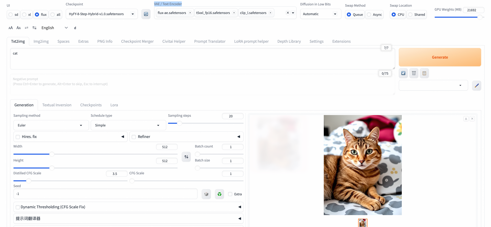

🎨 Flux1-Dev 模型使用指南
✨ Flux1-Dev 模型
由 Black Forest Labs 开发的先进文本到图像生成模型
**Flux1-Dev** 是当前开源图像生成技术的最高水准代表，基于流匹配（Flow Matching）技术，在图像质量、文本理解能力和生成速度方面都有显著提升。
🚀 核心特性
🏗️ 先进架构
基于流匹配技术的扩散变换器架构
🎯 卓越质量
生成图像质量接近商业级模型水准
🧠 强大文本理解
集成完整FP16版CLIP-L与T5文本编码器
📐 高分辨率支持
原生支持1024×1024及更高分辨率
⚡ 快速生成
优化的推理速度，支持少步生成
🎨 多样化风格
支持写实、艺术、概念设计等多种风格
📊 技术规格
🏆 模型优势
**核心优势特点**
- **🖼️ 图像质量**：细节丰富，色彩自然，构图合理
- **📝 文本遵循**：精确理解复杂文本描述
- **🎭 风格多样**：从照片级写实到抽象艺术
- **🎯 一致性**：生成结果稳定可控
- **⚡ 效率**：相比同级别模型推理速度更快
⚙️ 配置说明
📁 模型文件
🌐 WebUI 环境
**主模型** - `flux.1_dev_8x8_e4m3fn.safetensors` **VAE** - `flux-ae.safetensors` **文本编码器** - `t5xxl_fp16.safetensors` - `clip_l.safetensors` - `clip_g.safetensors`🎛️ ComfyUI 环境
**主模型** - `flux1-dev.safetensors` **VAE** - `flux-ae.safetensors` **文本编码器** - `t5xxl_fp16.safetensors` - `clip_l.safetensors`📖 使用指南
🎛️ ComfyUI 使用
🖱️ 界面操作
**步骤 1：选择工作流**
- 在工作流框处选择该工作流

**步骤 2：输入提示词**
- 输入你想要的内容描述

**步骤 3：创意示例**
- 可以输入一些有趣的内容，比如"关羽大战白雪公主"
**步骤 4：参数设置**
- 设置图片的分辨率和数量
- 如需加快生成速度，可将 batch_size 设置为 1

**步骤 5：等待生成**
- 耐心等待图片生成完成
🔌 ComfyUI API调用
**获取Token**
- 点击右上方按钮，打开底部面板获取token

**获取服务器地址**
- COMFYUI_SERVER的获取参考

📋 点击展开ComfyUI API调用Python代码
import requests, json, uuid, time, random, os
COMFYUI_SERVER, COMFYUI_TOKEN = "#在这里填入你的服务器地址", "在这里填入你的token"
UNET_MODEL, VAE_MODEL, CLIP1_MODEL, CLIP2_MODEL = "flux1-dev.safetensors", "ae.safetensors", "t5xxl_fp16.safetensors", "clip_l.safetensors"
PROMPT = "A beautiful anime girl with long flowing hair, wearing elegant dress, standing in a magical garden with glowing flowers, soft lighting, high quality, detailed"
class FluxClient:
def __init__(self):
self.base_url, self.client_id = f"http://{COMFYUI_SERVER}", str(uuid.uuid4())
self.headers = {"Content-Type": "application/json", **({"Authorization": f"Bearer {COMFYUI_TOKEN}"} if COMFYUI_TOKEN else {})}
def generate(self, prompt, aspect="1:1 square 1024x1024", steps=35, guidance=3.5, batch=1):
workflow = {"6": {"inputs": {"text": prompt, "clip": ["11", 0]}, "class_type": "CLIPTextEncode"}, "8": {"inputs": {"samples": ["13", 0], "vae": ["10", 0]}, "class_type": "VAEDecode"}, "9": {"inputs": {"filename_prefix": "Flux", "images": ["8", 0]}, "class_type": "SaveImage"}, "10": {"inputs": {"vae_name": VAE_MODEL}, "class_type": "VAELoader"}, "11": {"inputs": {"clip_name1": CLIP1_MODEL, "clip_name2": CLIP2_MODEL, "type": "flux", "device": "default"}, "class_type": "DualCLIPLoader"}, "12": {"inputs": {"unet_name": UNET_MODEL, "weight_dtype": "fp8_e4m3fn"}, "class_type": "UNETLoader"}, "13": {"inputs": {"noise": ["25", 0], "guider": ["22", 0], "sampler": ["16", 0], "sigmas": ["17", 0], "latent_image": ["85", 4]}, "class_type": "SamplerCustomAdvanced"}, "16": {"inputs": {"sampler_name": "dpmpp_2m"}, "class_type": "KSamplerSelect"}, "17": {"inputs": {"scheduler": "sgm_uniform", "steps": steps, "denoise": 1, "model": ["61", 0]}, "class_type": "BasicScheduler"}, "22": {"inputs": {"model": ["61", 0], "conditioning": ["60", 0]}, "class_type": "BasicGuider"}, "25": {"inputs": {"noise_seed": random.randint(1, 1000000000000000)}, "class_type": "RandomNoise"}, "60": {"inputs": {"guidance": guidance, "conditioning": ["6", 0]}, "class_type": "FluxGuidance"}, "61": {"inputs": {"max_shift": 1.15, "base_shift": 0.5, "width": ["85", 0], "height": ["85", 1], "model": ["12", 0]}, "class_type": "ModelSamplingFlux"}, "85": {"inputs": {"width": 1024, "height": 1024, "aspect_ratio": aspect, "swap_dimensions": "Off", "upscale_factor": 1, "batch_size": batch}, "class_type": "CR SDXL Aspect Ratio"}}
return requests.post(f"{self.base_url}/prompt", headers=self.headers, json={"prompt": workflow, "client_id": self.client_id}).json()["prompt_id"]
def status(self, task_id):
queue = requests.get(f"{self.base_url}/queue", headers=self.headers).json()
return "processing" if any(item[1] == task_id for item in queue.get("queue_running", [])) else "pending" if any(item[1] == task_id for item in queue.get("queue_pending", [])) else "completed" if task_id in requests.get(f"{self.base_url}/history/{task_id}", headers=self.headers).json() else "processing"
def download(self, task_id, output_dir="./flux_output/"):
history = requests.get(f"{self.base_url}/history/{task_id}", headers=self.headers).json()
files = []
if task_id in history:
for output in history[task_id]['outputs'].values():
if 'images' in output:
os.makedirs(output_dir, exist_ok=True)
for img in output['images']:
path = os.path.join(output_dir, img['filename'])
with open(path, "wb") as f: f.write(requests.get(f"{self.base_url}/view?filename={img['filename']}", headers=self.headers).content)
files.append(path)
return files
def main():
client = FluxClient()
print(f"🎨 生成: {PROMPT}")
task_id = client.generate(PROMPT)
print(f"🆔 ID: {task_id}")
while True:
status = client.status(task_id)
print(f"📊 {status}")
if status == "completed": break
time.sleep(5)
files = client.download(task_id)
print(f"🎉 完成! 生成 {len(files)} 张图片: {files}")
if __name__ == "__main__": main()🌐 Web UI 使用
🖱️ 界面操作
**1. 模型切换**
- 在Checkpoint模型选择器中选择Flux1-Dev（HyFY-8-Step-Hybrid-v1.0.safetensors）模型
**2. VAE和CLIP模型选择**
- 选择：`Clip_l.safetensors`, `t5xxl_fp16.safetensors`, `flux-ae.safetensors`

**3. 提示词输入**
- **正向提示词**：详细描述想要生成的图像
- **负向提示词**：描述不想要的元素（Flux模型对负向提示词不敏感）
**4. 参数设置**
- **步数**：推荐 8-20 步
- **CFG**：推荐 1.0-3.5（较低值效果更好）
- **采样器**：推荐 Euler 或 DPM++ 2M
- **分辨率**：1024×1024 或其他支持的尺寸
**5. 生成图像**
- 点击"Generate"按钮开始生成
**6. 结果处理**
- 查看、保存或进一步编辑生成的图像
🎨 提示词示例
📸 写实风格
"a professional portrait of a young woman, natural lighting, high resolution, detailed skin texture, photorealistic"
🎨 艺术风格
"an impressionist painting of a garden in spring, soft brushstrokes, vibrant colors, artistic masterpiece"
🤖 概念设计
"futuristic robot design, sleek metallic surface, glowing blue accents, concept art, highly detailed"
🏔️ 风景摄影
"mountain landscape at golden hour, dramatic clouds, professional photography, ultra-wide angle, HDR"
🖼️ UI界面使用示例

🐍 点击展开WebUI API调用Python代码
import base64
import time
import uuid
# 配置
base_url = "http://127.0.0.1:7680"
auth = ("admin", "${APIKEY}")
session_hash = str(uuid.uuid4())[:12]
# 设置VAE/Text Encoder
print("正在设置VAE/Text Encoder...")
requests.post(f"{base_url}/run/predict", json={
"data": [["flux-ae.safetensors", "t5xxl_fp16.safetensors", "clip_l.safetensors", "clip_g.safetensors"]],
"event_data": None,
"fn_index": 9,
"trigger_id": 1001,
"session_hash": session_hash
}, auth=auth)
time.sleep(3)
# 切换FLUX模型
print("正在切换FLUX模型...")
requests.post(f"{base_url}/queue/join", json={
"data": ["HyFY-8-Step-Hybrid-v1.0.safetensors"],
"event_data": None,
"fn_index": 8,
"trigger_id": 1002,
"session_hash": session_hash
}, auth=auth)
time.sleep(15)
# 生成图片
print("正在生成图片...")
result = requests.post(f"{base_url}/sdapi/v1/txt2img", json={
"prompt": "a beautiful cat",
"steps": 8,
"width": 1024,
"height": 1024,
"cfg_scale": 1.0,
"sampler_name": "Euler"
}, auth=auth).json()
# 保存图片
if "images" in result:
with open("output.png", "wb") as f:
f.write(base64.b64decode(result["images"][0]))
print("图片已保存为 output.png")
else:
print("错误:", result)</code></pre>
---
**模型支持说明**
当前服务中，**Flux模型**会部署到ECS实例中。除了当前的**Flux-dev模型**，还支持了**SD1.5**和**SD3**模型，可在**WebUI Forge界面**进行动态切换。
---
🎨 开始你的AI艺术创作之旅！ | 使用Flux1-Dev模型，让想象力变为现实
© 2009-2022 Aliyun.com 版权所有